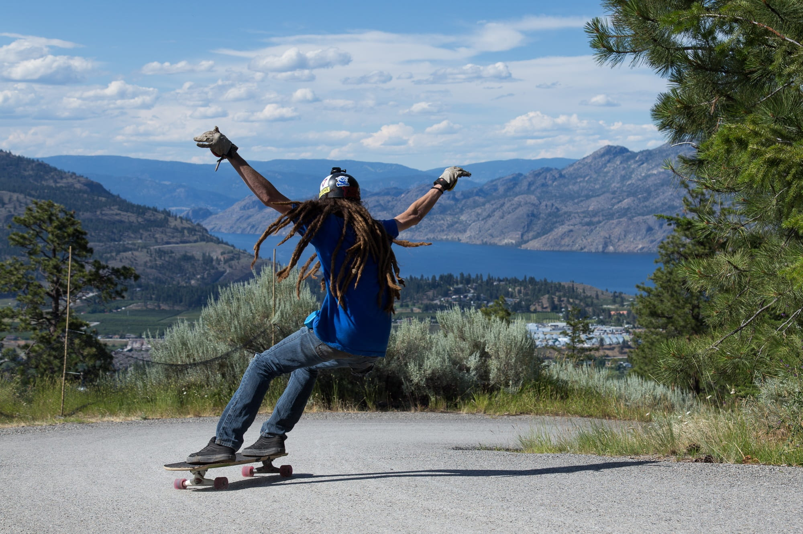
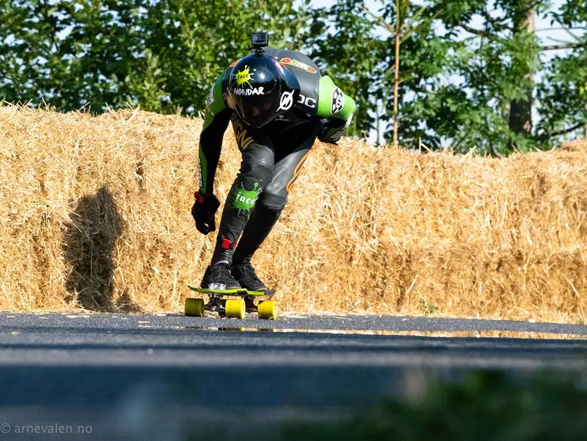

O longboard surgiu entre 1960 e 1980, e como o nome já diz, diferente de um skate, o longboard tem um desing maior, com as rodas sendo maiores e a prancha, ou shape, também.
O longboard tem quatro modalidades principais que são praticadas, como apresentado na lista:
Agora vamos destrinchar sobre cada uma das modalidades, das mais desconhecidas para as mais conhecidas, em ordem.
Essa modalidade consiste em pegar descidas suaves a fazer grandes curvas e slides (derrapagem com o skate, geralmente para diminuir a velocidade). Não consegui achar grandes coisas sobre essa modalide em específico, mas é bom saber que existe.
Essa é uma modalidade que consiste em executar uma sequência de manobras em uma área plana, enquanto você anda no skate. É uma modalidade muito bonita de se assistir, pois os movimentos são muito suaves e satisfatórios e flúidos de se ver.

Agora, partindo para as modalidades mais conhecidas, temos o freeride, que se baseia em pegar descidas longas variando a velocidade utilizando dos slides para isso.
Vale ressaltar que nessa e na próxima categoria, geralmente aparece muitos praticantes utilizando de luvas, que possuem como se fosse uma "pedra" na palma, a qual é possivel encostar no chão e ser utilizada como apoio para os slides em altas velocidades (não foi possível achar uma imagem dessas luvas).
Por último, mas não menos importante, temos o downhill, a modalidade que eu mais me interesso, e resumindo, consiste em pegar descidas extremamente logas e com curvas muito fechadas, na maior velocidade possivel. Nessa modalidade também é utilizado slides, mas com menos intensidade.
Vale ressaltar, que não é raro encontrar pessoas passando dos 60 km/h nessa modalidade, então, como é possivel ver na imagem acima, os praticantes geralmente usam roupas especiais e capacetes curvados para melhorar a aerodinâmica, além das luvas para slide.
Para finalizar eu deixo alguns links de vídeos curtos de algumas das modalidades, que acho interessante de assistir para entender melhor sobre: